Parametric estimation
Peter Solymos
edma03-parametric.RmdIntroduction
This tutorial describes how to estimate SigmaK and assess if it is estimable. Parametric estimation of SigmaK involves the following steps:
- non-parametric estimation of mean form and SigmaKstar using the
edma_fitfunction, - constructing of a pattern matrix based on biology of landmarks and respecting statistical constraints,
- use the
SigmaK_fitto estimate SigmaK using the non-parametric fit and the pattern matrix.
Simulated landmark data
To demonstrate the workflow, let us simulate some data. Simulation is useful for checking the limits of the estimating procedure. We know what the ‘true’ input are, because we are controlling those through the simulation. We can then compare the outputs (our estimates), to the known inputs, and this is how we evaluate the utility and limitations of our methods.
Let us begin with the following set of 6 landmarks in 2-dimensions:
(M <- array(
c(82, 21, 22, -50, -37, -37,
0, 17, -17, 0, 41, -41),
dim=c(6, 2),
dimnames=list(paste0("L", 1:6), c("X", "Y"))))
#> X Y
#> L1 82 0
#> L2 21 17
#> L3 22 -17
#> L4 -50 0
#> L5 -37 41
#> L6 -37 -41
plot(M, pch=3, asp=1, axes=FALSE, ann=FALSE, type="n")
text(M, labels=rownames(M), col=4)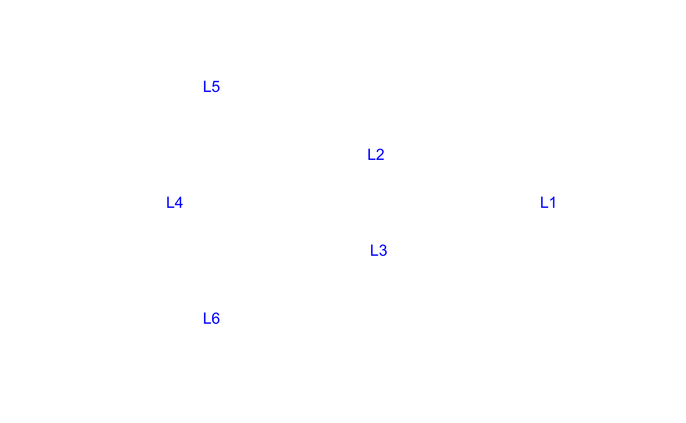
The simplest SigmaK variance-covariance matrix is \(\sigma^2 I\), that is constant variance (\(\sigma^2\)) in the diagonal of the \(6\times6\) square matrix and 0’s in all the off-diagonal cells:
sigma <- 2
SigmaK <- diag(sigma^2, 6, 6)
dimnames(SigmaK) <- list(rownames(M), rownames(M))
print_tb(SigmaK)
#> L1 L2 L3 L4 L5 L6
#> L1 4 . . . . .
#> L2 . 4 . . . .
#> L3 . . 4 . . .
#> L4 . . . 4 . .
#> L5 . . . . 4 .
#> L6 . . . . . 4We can use the edma_simulate_data function to simulate n specimen given form matrix M and covariance matrix SigmaK:
n <- 1000
sim <- edma_simulate_data(n=n, M, SigmaK)
tmp <- plot_2d(sim, xlim=c(-80, 100), ylim=c(-60, 60), asp=1)
xy <- attr(tmp, "coordinates")
text(xy[,1]+15, xy[,2], labels=rownames(xy), cex=0.6, col=4)
We can see from the figure that the constant variance translates to roughly circle shaped convex hulls around the landmarks (the hull bounds the landmarks form the n specimens), and the size of these patches is similar (equal variances).
Nonparametric estimation
We use the non-parametric EDMA algorithm to estimate the form matrix and the SigmaKstar matrix:
Because we used simulations, we can compare the known M matrix with the estimated mean form:
M # true
#> X Y
#> L1 82 0
#> L2 21 17
#> L3 22 -17
#> L4 -50 0
#> L5 -37 41
#> L6 -37 -41
round(Meanform(fit), 2) # estimate
#> X Y
#> L1 -81.87 0.12
#> L2 -20.80 17.10
#> L3 -21.89 -16.96
#> L4 50.30 -0.17
#> L5 37.20 40.95
#> L6 37.06 -41.03The ‘true’ SigmaKstar matrix is stored in our simulation object:
round(attr(sim, "simulation_settings")$SigmaKstar, 2)
#> L1 L2 L3 L4 L5 L6
#> L1 3.33 -0.67 -0.67 -0.67 -0.67 -0.67
#> L2 -0.67 3.33 -0.67 -0.67 -0.67 -0.67
#> L3 -0.67 -0.67 3.33 -0.67 -0.67 -0.67
#> L4 -0.67 -0.67 -0.67 3.33 -0.67 -0.67
#> L5 -0.67 -0.67 -0.67 -0.67 3.33 -0.67
#> L6 -0.67 -0.67 -0.67 -0.67 -0.67 3.33
round(SigmaKstar(fit), 2)
#> L1 L2 L3 L4 L5 L6
#> L1 3.43 -0.68 -0.58 -0.82 -0.90 -0.46
#> L2 -0.68 3.43 -0.70 -0.71 -0.64 -0.71
#> L3 -0.58 -0.70 3.51 -0.84 -0.72 -0.66
#> L4 -0.82 -0.71 -0.84 3.55 -0.42 -0.77
#> L5 -0.90 -0.64 -0.72 -0.42 3.22 -0.54
#> L6 -0.46 -0.71 -0.66 -0.77 -0.54 3.14Pattern matrix
The parametric estimation requires a pattern matrix that describes the unknowns in the SigmaK matrix. This SigmaK matrix is the variance covariance matrix describing the variances (diagonal) associated with each landmark, and the covariances (off-diagonal) among the landmarks.
The pattern matrix can be constructed in R, but when the number of landmarks is high and variances are expected to differ among the landmarks, it might be easier to construct the pattern matrix in a spreadsheet editor (Excel). Here is how the file should be constructed (the package contains example files, see ?read_pattern):
- the 1st row describes the landmarks starting from the 2nd column,
- the 1st column describes the landmarks in the same order as the column headers,
- leave the cell in the top left corner empty,
- use unique names or numbers in the rest of the table to denote unique variables in the Sigma matrix,
- structural zeros (cells where the covariance is known or assumed to be 0) have to be blank,
- there cannot be blank cells in the diagonal of the matrix,
- values below and above the diagonal must be symmetric (value in row 2/column 3 must be the same as row 3/column 2), either unique names or numbers, or blank.
The pattern matrix for the equal variance case looks like this:
p <- matrix(
c("1", NA, NA, NA, NA, NA,
NA, "1", NA, NA, NA, NA,
NA, NA, "1", NA, NA, NA,
NA, NA, NA, "1", NA, NA,
NA, NA, NA, NA, "1", NA,
NA, NA, NA, NA, NA, "1"),
nrow=6, ncol=6, byrow=TRUE)
dimnames(p) <- list(rownames(M), rownames(M))
print_tb(p)
#> L1 L2 L3 L4 L5 L6
#> L1 1 . . . . .
#> L2 . 1 . . . .
#> L3 . . 1 . . .
#> L4 . . . 1 . .
#> L5 . . . . 1 .
#> L6 . . . . . 1Parametric estimation
The parametric estimation requires the fitted object from the previous step of nonparametric estimation (that gave us the estimate of the mean form and SigmaKstar), and the pattern matrix, so that the program knows what parameters to estimate and where those are placed in the SigmaK matrix:
(o <- SigmaK_fit(fit, p))
#> EDMA parametric fit (2-step): Simulated landmark data
#> Call: SigmaK_fit(object = fit, pattern = p)
#> 2 dimensions, 6 landmarks, 1000 replicates, no bootstrapNow let us compare the ‘true’ SigmaK matrix with the estimated ones. The ‘full’ estimate of SigmaK can be accessed by the SigmaKfull function which follows Hu (2007).
print_tb(SigmaK) # true
#> L1 L2 L3 L4 L5 L6
#> L1 4 . . . . .
#> L2 . 4 . . . .
#> L3 . . 4 . . .
#> L4 . . . 4 . .
#> L5 . . . . 4 .
#> L6 . . . . . 4
print_tb(round(SigmaKfull(o), 2)) # full estimate
#> L1 L2 L3 L4 L5 L6
#> L1 4.14 . . . . .
#> L2 . 4.08 . . . .
#> L3 . . 3.97 . . .
#> L4 . . . 4.48 . .
#> L5 . . . . 4.32 .
#> L6 . . . . . 3.35We can see in the SigmaKfull matrix that the values are slightly different, because the algorithm treats every non-NA entry in the pattern matrix (non-0 cell in the SigmaK matrix to be estimated) as an unknown variable.
The SigmaK by default returns the estimates that are constrained by the pattern matrix. We call this default method the 2-step algorithm because the numerical optimization follows the estimation of SigmaKfull. We then use the pattern matrix to constrain the parameters denoted by the same labels to be the same value. Let’s see what value we get for our constant variance parameter:
print_tb(SigmaK) # true
#> L1 L2 L3 L4 L5 L6
#> L1 4 . . . . .
#> L2 . 4 . . . .
#> L3 . . 4 . . .
#> L4 . . . 4 . .
#> L5 . . . . 4 .
#> L6 . . . . . 4
print_tb(round(SigmaK(o), 2)) # constrained estimate
#> A B C D E F
#> A 4.06 . . . . .
#> B . 4.06 . . . .
#> C . . 4.06 . . .
#> D . . . 4.06 . .
#> E . . . . 4.06 .
#> F . . . . . 4.06
cbind(true=sigma^2, estimate=o$results$par)
#> true estimate
#> 1 4 4.056236There is an other method we call the 1-step algorithm where the numerical optimization is performed without the information from SigmaKfull. It uses only the SigmaKstar matrix. We can use this algorithm as:
(o1 <- SigmaK_fit(fit, p, twostep=FALSE))
#> EDMA parametric fit (1-step): Simulated landmark data
#> Call: SigmaK_fit(object = fit, pattern = p, twostep = FALSE)
#> 2 dimensions, 6 landmarks, 1000 replicates, no bootstrap
cbind(true=sigma^2, onestep=o1$results$par, twostep=o$results$par)
#> true onestep twostep
#> 1 4 4.056236 4.056236Both estimates look the same and very close to the true estimate.
Unequal variance case
In the unequal variance case we can have different variances for the different landmarks. Here is the corresponding pattern matrix:
p <- matrix(
c("1", NA, NA, NA, NA, NA,
NA, "1", NA, NA, NA, NA,
NA, NA, "1", NA, NA, NA,
NA, NA, NA, "2", NA, NA,
NA, NA, NA, NA, "2", NA,
NA, NA, NA, NA, NA, "2"),
nrow=6, ncol=6, byrow=TRUE)
dimnames(p) <- list(rownames(M), rownames(M))
plot_tb(p)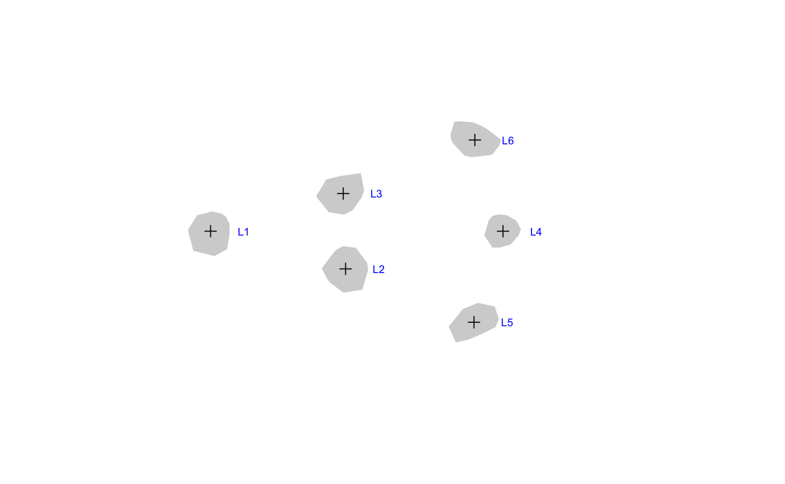
The SigmaK matrix looks like this:
parm <- c("1"=12, "2"=2)
SigmaK <- make_Sigma(parm, p)
dimnames(SigmaK) <- dimnames(p)
print_tb(SigmaK)
#> L1 L2 L3 L4 L5 L6
#> L1 12 . . . . .
#> L2 . 12 . . . .
#> L3 . . 12 . . .
#> L4 . . . 2 . .
#> L5 . . . . 2 .
#> L6 . . . . . 2The unequal variances translate to the following simulated data:
sim <- edma_simulate_data(n=n, M, SigmaK)
tmp <- plot_2d(sim, xlim=c(-80, 100), ylim=c(-60, 60), asp=1)
xy <- attr(tmp, "coordinates")
text(xy[,1]+15, xy[,2], labels=rownames(xy), cex=0.6, col=4)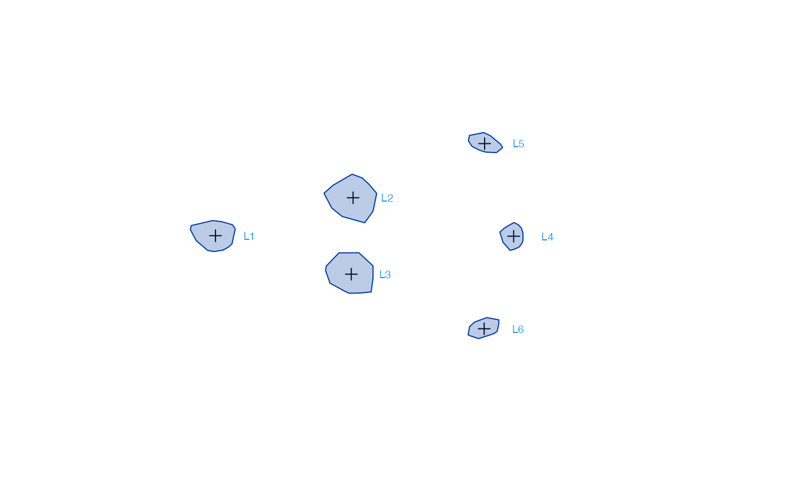
We can see the different sizes of the convex hulls corresponding to the variances for each landmark.
For the estimation, we use edma_fit and SigmaK_fit as before:
fit <- edma_fit(sim)
o1 <- SigmaK_fit(fit, p, twostep=FALSE)
o2 <- SigmaK_fit(fit, p, twostep=TRUE)
print_tb(SigmaK) # true
#> L1 L2 L3 L4 L5 L6
#> L1 12 . . . . .
#> L2 . 12 . . . .
#> L3 . . 12 . . .
#> L4 . . . 2 . .
#> L5 . . . . 2 .
#> L6 . . . . . 2
print_tb(round(SigmaKfull(o2), 2)) # full estimate
#> L1 L2 L3 L4 L5 L6
#> L1 11.89 . . . . .
#> L2 . 10.28 . . . .
#> L3 . . 12.99 . . .
#> L4 . . . 2.30 . .
#> L5 . . . . 1.92 .
#> L6 . . . . . 2.59
cbind(true=parm,
onestep=o1$results$par[names(parm)],
twostep=o2$results$par[names(parm)])
#> true onestep twostep
#> 1 12 11.825347 11.721269
#> 2 2 2.165456 2.269536Let’s have 6 different values in the diagonal:
p <- matrix(
c("1", NA, NA, NA, NA, NA,
NA, "2", NA, NA, NA, NA,
NA, NA, "3", NA, NA, NA,
NA, NA, NA, "4", NA, NA,
NA, NA, NA, NA, "5", NA,
NA, NA, NA, NA, NA, "6"),
nrow=6, ncol=6, byrow=TRUE)
dimnames(p) <- list(rownames(M), rownames(M))
plot_tb(p)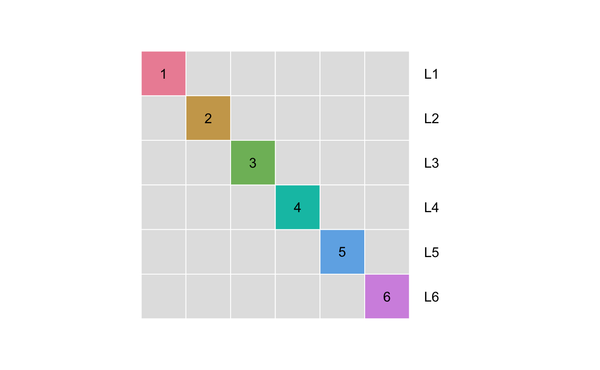
The SigmaK matrix looks like this:
parm <- c("1"=12, "2"=8, "3"=11, "4"=3, "5"=10, "6"=2)
SigmaK <- make_Sigma(parm, p)
dimnames(SigmaK) <- dimnames(p)
print_tb(SigmaK)
#> L1 L2 L3 L4 L5 L6
#> L1 12 . . . . .
#> L2 . 8 . . . .
#> L3 . . 11 . . .
#> L4 . . . 3 . .
#> L5 . . . . 10 .
#> L6 . . . . . 2This translates to the following simulated data:
sim <- edma_simulate_data(n=n, M, SigmaK)
tmp <- plot_2d(sim, xlim=c(-80, 100), ylim=c(-60, 60), asp=1)
xy <- attr(tmp, "coordinates")
text(xy[,1]+15, xy[,2], labels=rownames(xy), cex=0.6, col=4)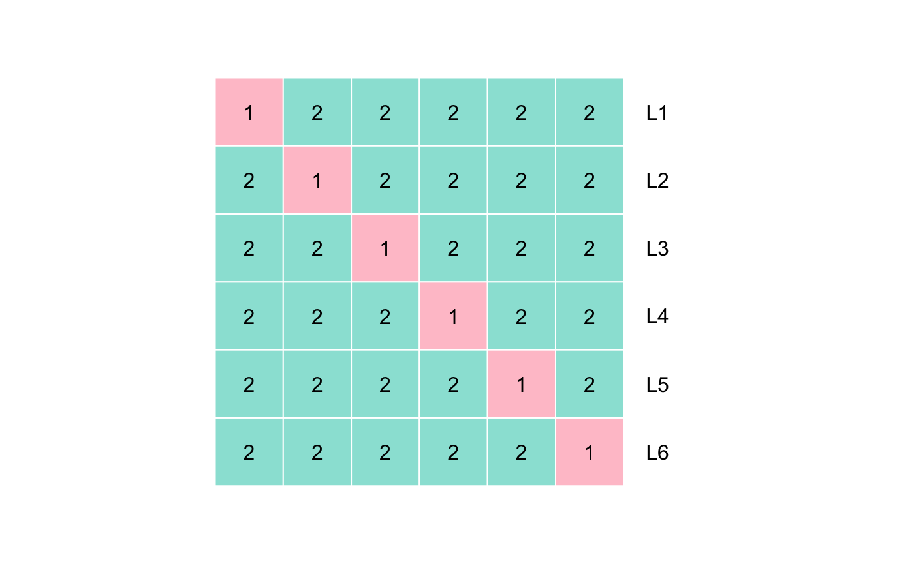
We can now see that the constrained and full solutions are identical, because no parameters are repeated in our pattern matrix:
fit <- edma_fit(sim)
o1 <- SigmaK_fit(fit, p, twostep=FALSE)
o2 <- SigmaK_fit(fit, p, twostep=TRUE)
print_tb(SigmaK) # true
#> L1 L2 L3 L4 L5 L6
#> L1 12 . . . . .
#> L2 . 8 . . . .
#> L3 . . 11 . . .
#> L4 . . . 3 . .
#> L5 . . . . 10 .
#> L6 . . . . . 2
print_tb(round(SigmaKfull(o2), 2)) # full estimate
#> L1 L2 L3 L4 L5 L6
#> L1 11.50 . . . . .
#> L2 . 8.43 . . . .
#> L3 . . 12.25 . . .
#> L4 . . . 2.16 . .
#> L5 . . . . 8.69 .
#> L6 . . . . . 2.52
cbind(true=parm,
onestep=o1$results$par[names(parm)],
twostep=o2$results$par[names(parm)])
#> true onestep twostep
#> 1 12 11.498857 11.498709
#> 2 8 8.245809 8.425900
#> 3 11 11.042865 12.248140
#> 4 3 2.760571 2.164662
#> 5 10 9.881921 8.687253
#> 6 2 2.112453 2.518331We can see that both the 1-step and 2-step algorithms give estimates that are close to the true values when all the correlations (off-diagonal elements) of SigmaK are 0 (coded as NA in the pattern matrix).
Correlations
We can add correlations between the frontal (L1) and lateral (L2, L3) landmarks, and similarly to the other 3 landmarks:
p <- matrix(
c("1", "2", "2", NA, NA, NA,
"2", "1", NA, NA, NA, NA,
"2", NA, "1", NA, NA, NA,
NA, NA, NA, "3", "4", "4",
NA, NA, NA, "4", "3", NA,
NA, NA, NA, "4", NA, "3"),
nrow=6, ncol=6, byrow=TRUE)
dimnames(p) <- list(rownames(M), rownames(M))
plot_tb(p)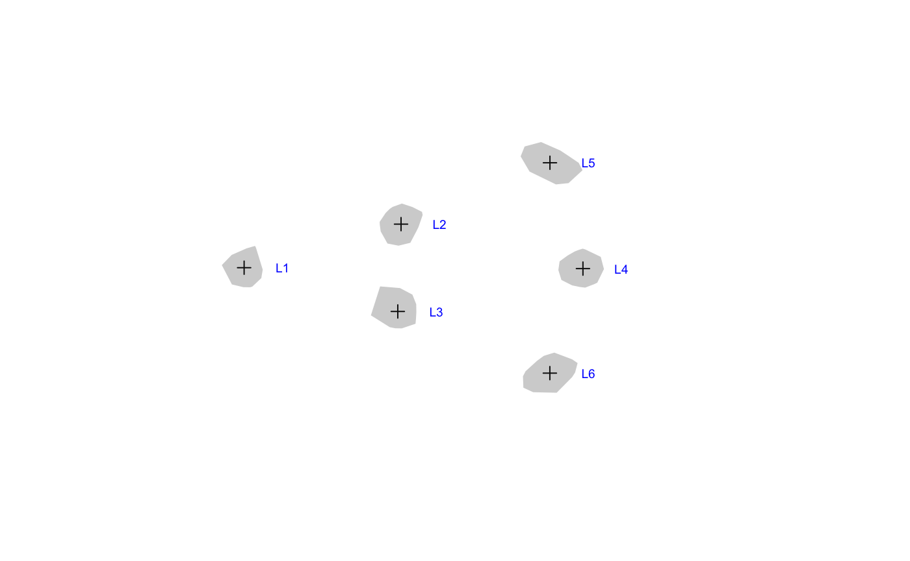
The SigmaK matrix looks like this:
parm <- c("1"=12, "2"=1, "3"=8, "4"=2)
SigmaK <- EDMAinR:::.vec2mat(parm, EDMAinR:::.mat2fac(p))
dimnames(SigmaK) <- dimnames(p)
print_tb(SigmaK)
#> L1 L2 L3 L4 L5 L6
#> L1 12 1 1 . . .
#> L2 1 12 . . . .
#> L3 1 . 12 . . .
#> L4 . . . 8 2 2
#> L5 . . . 2 8 .
#> L6 . . . 2 . 8The unequal variances translate to the following simulated data:
sim <- edma_simulate_data(n=n, M, SigmaK)
tmp <- plot_2d(sim, xlim=c(-80, 100), ylim=c(-60, 60), asp=1)
xy <- attr(tmp, "coordinates")
text(xy[,1]+15, xy[,2], labels=rownames(xy), cex=0.6, col=4)
This setup seems estimable:
fit <- edma_fit(sim)
o1 <- SigmaK_fit(fit, p, twostep=FALSE)
o2 <- SigmaK_fit(fit, p, twostep=TRUE)
print_tb(SigmaK) # true
#> L1 L2 L3 L4 L5 L6
#> L1 12 1 1 . . .
#> L2 1 12 . . . .
#> L3 1 . 12 . . .
#> L4 . . . 8 2 2
#> L5 . . . 2 8 .
#> L6 . . . 2 . 8
print_tb(round(SigmaKfull(o2), 2)) # full estimate
#> L1 L2 L3 L4 L5 L6
#> L1 11.57 0.98 1.58 . . .
#> L2 0.98 12.15 . . . .
#> L3 1.58 . 12.31 . . .
#> L4 . . . 7.46 2.00 1.36
#> L5 . . . 2.00 8.32 .
#> L6 . . . 1.36 . 8.63
cbind(true=parm,
onestep=o1$results$par[names(parm)],
twostep=o2$results$par[names(parm)])
#> true onestep twostep
#> 1 12 11.988982 12.012470
#> 2 1 1.291689 1.277877
#> 3 8 8.200966 8.133914
#> 4 2 1.829278 1.679760Sensitivity analysis
The parametric estimate is based on an optimization algorithm. This algorithm requires starting values for the unknown parameters. The robustness of our estimates can be tested using different starting values for the optimization. The idea is that we can call the estimates stable if the optimization finds the same values irrespective of the starting values.
We can assess the results in this regard using the sensitivity function. This function repeats the estimation m times by using a starting value that is the original starting value times a random uniform number. The same idea can be applied to the 1-step and 1-step estimator:
sensitivity(o1)
#> par_1 par_2 par_3 par_4 value
#> [1,] 11.98898 1.291689 8.200966 1.829278 1.770413
#> [2,] 11.98897 1.294422 8.198867 1.833990 1.770523
#> [3,] 11.98557 1.282750 8.206205 1.832114 1.770555
#> [4,] 12.00125 1.300504 8.195235 1.834312 1.770929
#> [5,] 11.98718 1.290446 8.202447 1.830951 1.770420
#> [6,] 11.98915 1.286699 8.205750 1.831073 1.770494
#> [7,] 11.99169 1.286468 8.216681 1.836992 1.770929
#> [8,] 11.99146 1.287296 8.198470 1.827432 1.770516
#> [9,] 11.98764 1.295328 8.189940 1.815521 1.770840
#> [10,] 11.98432 1.287713 8.204633 1.827749 1.770503
#> [11,] 12.01228 1.282848 8.219605 1.831498 1.773071
sensitivity(o2)
#> par_1 par_2 par_3 par_4 value
#> [1,] 12.01247 1.277877 8.133914 1.679760 0.000000e+00
#> [2,] 12.01158 1.278736 8.135852 1.678110 8.012206e-06
#> [3,] 12.01664 1.270053 8.130103 1.681810 9.733175e-05
#> [4,] 12.01298 1.278160 8.134899 1.680438 1.774786e-06
#> [5,] 12.01304 1.275850 8.131526 1.678458 1.183108e-05
#> [6,] 12.01185 1.277407 8.133567 1.680789 1.785666e-06
#> [7,] 12.02086 1.273592 8.134955 1.679580 8.980361e-05
#> [8,] 12.02192 1.285185 8.121670 1.678262 2.948211e-04
#> [9,] 12.00946 1.277510 8.137112 1.676533 2.980716e-05
#> [10,] 12.01085 1.278701 8.134720 1.679006 4.504664e-06
#> [11,] 12.01364 1.277477 8.132173 1.674293 3.443842e-05The par_1, par_2, etc. columns shows the parameter estimates for the unknown variables, the value column shows the value of the loss function evaluated these parameter values. Each row represent a separate run, the 1st row the original estimate, the rest from repeated runs with different starting values. We see that in this case the 2-step estimator is less sensitive to starting values, but both methods provide very similar estimates and loss function values.
Non-estimable case: equi-correlation
The following parametrization is a very common parametrization. As we will see, contrary to the intuition that models with few unknowns (a single variance and a single covariance term) are identifiable, this model is actually non-identifiable. Let us walk through the steps of estimating the parameters and look for signs of non-identifiability:
p <- matrix(
c("1", "2", "2", "2", "2", "2",
"2", "1", "2", "2", "2", "2",
"2", "2", "1", "2", "2", "2",
"2", "2", "2", "1", "2", "2",
"2", "2", "2", "2", "1", "2",
"2", "2", "2", "2", "2", "1"),
nrow=6, ncol=6, byrow=TRUE)
dimnames(p) <- list(rownames(M), rownames(M))
plot_tb(p)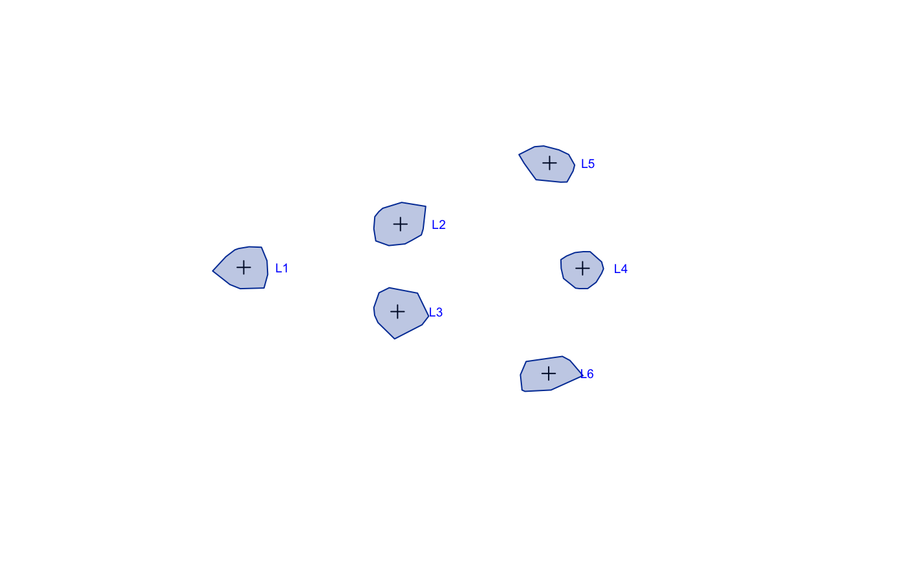
The diagonal elements are \(\sigma^2\) (equal variance), the off diagonal elements are \(\sigma^2\rho\) where \(\rho\) is the correlation:
parm <- c("1"=10, "2"=2)
SigmaK <- EDMAinR:::.vec2mat(parm, EDMAinR:::.mat2fac(p))
dimnames(SigmaK) <- dimnames(p)
print_tb(SigmaK)
#> L1 L2 L3 L4 L5 L6
#> L1 10 2 2 2 2 2
#> L2 2 10 2 2 2 2
#> L3 2 2 10 2 2 2
#> L4 2 2 2 10 2 2
#> L5 2 2 2 2 10 2
#> L6 2 2 2 2 2 10The correlation lead to more ellipsoid shapes for the simulated landmarks:
sim <- edma_simulate_data(n=n, M, SigmaK)
tmp <- plot_2d(sim, xlim=c(-80, 100), ylim=c(-60, 60), asp=1)
xy <- attr(tmp, "coordinates")
text(xy[,1]+15, xy[,2], labels=rownames(xy), cex=0.6, col=4)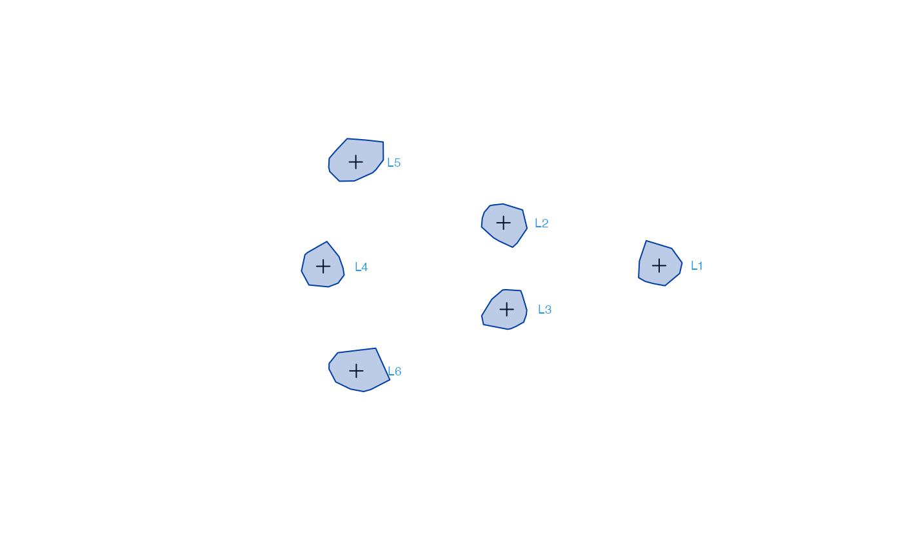
fit <- edma_fit(sim)
try(o1 <- SigmaK_fit(fit, p, twostep=FALSE))
#> Error in .SigmaK_fit(object$SigmaKstar, pattern, twostep = twostep, check = check, :
#> too many unknowns (21 > 15) in pattern matrix
try(o2 <- SigmaK_fit(fit, p, twostep=TRUE))
#> Error in .SigmaK_fit(object$SigmaKstar, pattern, twostep = twostep, check = check, :
#> too many unknowns (21 > 15) in pattern matrixOops, we get an error in both cases. Based on Hu (2007), we need to have a certain number of 0s in the SigmaK matrix to be able to identify the parameters. The number of non-zero values cannot be larger than \(K (K-1)/2\) (counting the elements in the diagonal and the lower triangle only). This is what the error informs us about. The check argument can be used to disable this check and see what we get if we disregard such mathematical results:
try(o1 <- SigmaK_fit(fit, p, twostep=FALSE, check=FALSE))
try(o2 <- SigmaK_fit(fit, p, twostep=TRUE, check=FALSE))
#> Error in .SigmaK_fit(object$SigmaKstar, pattern, twostep = twostep, check = check, :
#> Error in .SigmaK_fit_full(SigmaKstar, pattern) :
#> pattern matrix leads to non-invertible A matrixInteresting. The 1-step estimator works because it does not depend on SigmaKfull. The 2-step estimator, however, fails because the so called \(A\) matrix that we need to estimate SigmaKfull is non-invertible.
Let’s investigate the sensitivity analysis results for the 1-step estimator:
sensitivity(o1)
#> par_1 par_2 value
#> [1,] 4.748531 -3.4691179 1.648628
#> [2,] 6.890880 -1.3262843 1.648628
#> [3,] 6.151392 -2.0663959 1.648629
#> [4,] 6.452819 -1.7642788 1.648628
#> [5,] 8.568215 0.3510408 1.648628
#> [6,] 8.751653 0.5345982 1.648628
#> [7,] 10.031098 1.8137888 1.648628
#> [8,] 10.092239 1.8747895 1.648628
#> [9,] 9.797219 1.5798604 1.648628
#> [10,] 13.610085 5.3924150 1.648628
#> [11,] 7.928411 -0.2889969 1.648628The clear sign of non-identifiability here is that the loss function values are identical across runs, but the estimates vary widely. Just as a reminder, our true values were 10 for variance and 2 for covariance.
Non-estimable case: blocks
We can add correlations between the frontal (L1) and lateral (L2, L3) landmarks, and similarly to the other 3 landmarks:
p <- matrix(
c("1", "2", "2", NA, NA, NA,
"2", "1", "2", NA, NA, NA,
"2", "2", "1", NA, NA, NA,
NA, NA, NA, "3", "4", "4",
NA, NA, NA, "4", "3", "4",
NA, NA, NA, "4", "4","3"),
nrow=6, ncol=6, byrow=TRUE)
dimnames(p) <- list(rownames(M), rownames(M))
plot_tb(p)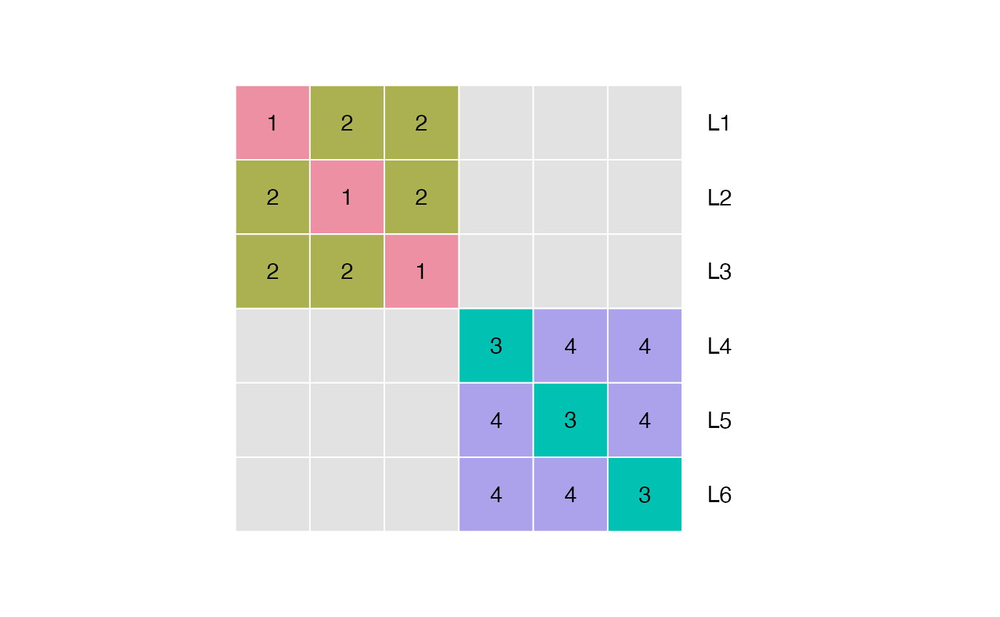
parm <- c("1"=12, "2"=1, "3"=8, "4"=2)
SigmaK <- EDMAinR:::.vec2mat(parm, EDMAinR:::.mat2fac(p))
dimnames(SigmaK) <- dimnames(p)
print_tb(SigmaK)
#> L1 L2 L3 L4 L5 L6
#> L1 12 1 1 . . .
#> L2 1 12 1 . . .
#> L3 1 1 12 . . .
#> L4 . . . 8 2 2
#> L5 . . . 2 8 2
#> L6 . . . 2 2 8The number of non-zero entries (diagonal and lower triangle) in this case is 12 which is less than \(K(K-1)/2=15\). According to the simple rule of thumb from above, this should work.
The bloc design translates to the following simulated data:
sim <- edma_simulate_data(n=n, M, SigmaK)
tmp <- plot_2d(sim, xlim=c(-80, 100), ylim=c(-60, 60), asp=1)
xy <- attr(tmp, "coordinates")
text(xy[,1]+15, xy[,2], labels=rownames(xy), cex=0.6, col=4)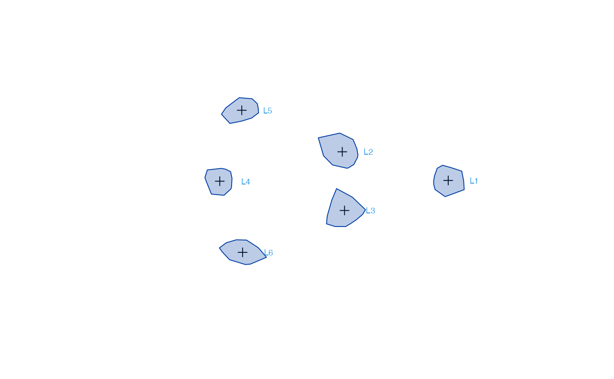
Although 12 < 15, this setup still leads to non-ivertible \(A\) matrix for the 2-step algorithm, and we can see the clear signs of non-estimability for the 1-step algorithm based on the sensitivity analysis:
fit <- edma_fit(sim)
try(o1 <- SigmaK_fit(fit, p, twostep=FALSE, check=FALSE))
try(o2 <- SigmaK_fit(fit, p, twostep=TRUE, check=FALSE))
#> Error in .SigmaK_fit(object$SigmaKstar, pattern, twostep = twostep, check = check, :
#> Error in .SigmaK_fit_full(SigmaKstar, pattern) :
#> pattern matrix leads to non-invertible A matrix
sensitivity(o1)
#> par_1 par_2 par_3 par_4 value
#> [1,] 15.164106 4.40603918 4.368686 -1.3228632 2.134815
#> [2,] 7.742781 -3.01601959 11.791203 6.0997825 2.134820
#> [3,] 13.030156 2.27228960 6.501521 0.8108885 2.134815
#> [4,] 12.703420 1.94567126 6.828631 1.1369303 2.134815
#> [5,] 12.277616 1.51973461 7.255024 1.5639104 2.134815
#> [6,] 8.085943 -2.67088711 11.446278 5.7547026 2.134815
#> [7,] 13.967915 3.21107553 5.563649 -0.1275584 2.134815
#> [8,] 4.842881 -5.91486050 14.689484 8.9972697 2.134816
#> [9,] 10.753748 -0.00333326 8.777853 3.0868331 2.134814
#> [10,] 9.177126 -1.58054022 10.355324 4.6639958 2.134814
#> [11,] 3.424321 -7.33235585 16.106952 10.4154903 2.134815An estimable block pattern
Let’s try a slight variation of this block design:
p <- matrix(
c("1", "2", "2", "2", NA, NA,
"2", "1", NA, NA, NA, NA,
"2", NA, "1", NA, NA, NA,
"2", NA, NA, "3", "4", "4",
NA, NA, NA, "4", "3", "4",
NA, NA, NA, "4", "4","3"),
nrow=6, ncol=6, byrow=TRUE)
dimnames(p) <- list(rownames(M), rownames(M))
plot_tb(p)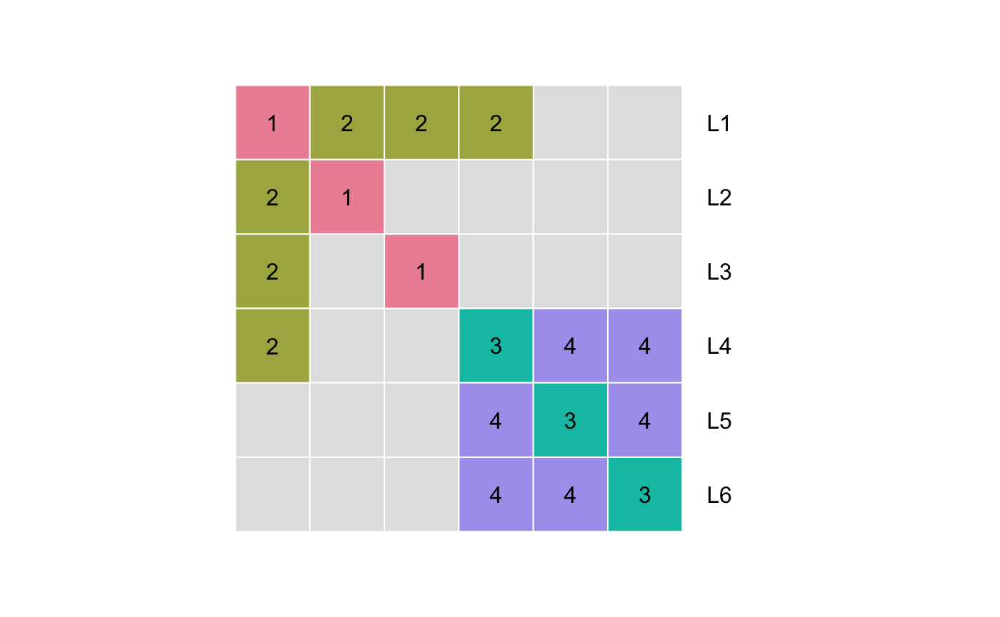
parm <- c("1"=12, "2"=1, "3"=8, "4"=2)
SigmaK <- EDMAinR:::.vec2mat(parm, EDMAinR:::.mat2fac(p))
dimnames(SigmaK) <- dimnames(p)
print_tb(SigmaK)
#> L1 L2 L3 L4 L5 L6
#> L1 12 1 1 1 . .
#> L2 1 12 . . . .
#> L3 1 . 12 . . .
#> L4 1 . . 8 2 2
#> L5 . . . 2 8 2
#> L6 . . . 2 2 8We have again 12 non-zero entries, but the 0 from the 1st row and 2nd colum to the 3rd row and 1st column (and its pair in the upper triangle).
sim <- edma_simulate_data(n=n, M, SigmaK)
tmp <- plot_2d(sim, xlim=c(-80, 100), ylim=c(-60, 60), asp=1)
xy <- attr(tmp, "coordinates")
text(xy[,1]+15, xy[,2], labels=rownames(xy), cex=0.6, col=4)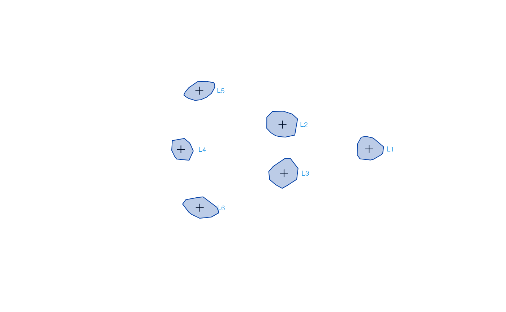
Everything looks fine now:
fit <- edma_fit(sim)
o1 <- SigmaK_fit(fit, p, twostep=FALSE)
o2 <- SigmaK_fit(fit, p, twostep=TRUE)
print_tb(SigmaK) # true
#> L1 L2 L3 L4 L5 L6
#> L1 12 1 1 1 . .
#> L2 1 12 . . . .
#> L3 1 . 12 . . .
#> L4 1 . . 8 2 2
#> L5 . . . 2 8 2
#> L6 . . . 2 2 8
print_tb(round(SigmaKfull(o2), 2)) # full estimate
#> L1 L2 L3 L4 L5 L6
#> L1 12.88 2.80 1.90 0.27 . .
#> L2 2.80 13.46 . . . .
#> L3 1.90 . 13.15 . . .
#> L4 0.27 . . 6.00 0.54 0.80
#> L5 . . . 0.54 6.26 1.14
#> L6 . . . 0.80 1.14 8.03
cbind(true=parm,
onestep=o1$results$par[names(parm)],
twostep=o2$results$par[names(parm)])
#> true onestep twostep
#> 1 12 12.573567 13.162196
#> 2 1 1.468189 1.657838
#> 3 8 7.615555 6.761063
#> 4 2 1.682164 0.827751
sensitivity(o1)
#> par_1 par_2 par_3 par_4 value
#> [1,] 12.57357 1.468189 7.615555 1.682164 5.975322
#> [2,] 12.58071 1.472606 7.605482 1.674960 5.975466
#> [3,] 12.57003 1.472980 7.612560 1.678754 5.975490
#> [4,] 12.56653 1.465929 7.621837 1.691717 5.975483
#> [5,] 12.57396 1.470649 7.609983 1.676606 5.975394
#> [6,] 12.57319 1.468542 7.612556 1.682648 5.975348
#> [7,] 12.56442 1.466028 7.619740 1.687996 5.975462
#> [8,] 12.58323 1.468371 7.606760 1.675192 5.975550
#> [9,] 12.57912 1.469446 7.614010 1.679855 5.975370
#> [10,] 12.58000 1.468876 7.614391 1.681572 5.975398
#> [11,] 12.57062 1.466483 7.613593 1.683689 5.975360
sensitivity(o2)
#> par_1 par_2 par_3 par_4 value
#> [1,] 13.16220 1.657838 6.761063 0.8277510 0.000000e+00
#> [2,] 13.16222 1.657624 6.764423 0.8243226 2.309325e-05
#> [3,] 13.16115 1.655461 6.760147 0.8263303 9.602650e-06
#> [4,] 13.16053 1.657458 6.761152 0.8267646 3.897586e-06
#> [5,] 13.16457 1.659400 6.760337 0.8248463 1.702563e-05
#> [6,] 13.15444 1.648954 6.755374 0.8249546 1.792628e-04
#> [7,] 13.15916 1.656532 6.761350 0.8282018 1.120905e-05
#> [8,] 13.14011 1.673423 6.761018 0.8316202 7.454372e-04
#> [9,] 13.16342 1.657751 6.761367 0.8270895 2.034351e-06
#> [10,] 13.15530 1.655695 6.758825 0.8335177 9.037772e-05
#> [11,] 13.17617 1.672984 6.771555 0.8306727 5.433578e-04The default checks for the SigmaK_fit can catch the non-identifiable situation. Use the check=FALSE and twostep=FALSE options with care.
Selecting the best parametric model
Assumptions about biological mechanisms driving the 0 pattern in the covariance matrix can help researchers to formulate hypotheses. If these hypotheses translate into patterns that are estimable, we can use the loss function value from the 1-step estimator to tell which model fits the data better:
We will use the p1 pattern matrix to simulate the data, and we will use all 5 identifiable patterns to try to estimate the parametric SigmaK matrix.
p1 <- matrix(
c("1", NA, NA, NA, NA, NA,
NA, "1", NA, NA, NA, NA,
NA, NA, "1", NA, NA, NA,
NA, NA, NA, "1", NA, NA,
NA, NA, NA, NA, "1", NA,
NA, NA, NA, NA, NA, "1"),
nrow=6, ncol=6, byrow=TRUE)
p2 <- matrix(
c("1", NA, NA, NA, NA, NA,
NA, "1", NA, NA, NA, NA,
NA, NA, "1", NA, NA, NA,
NA, NA, NA, "2", NA, NA,
NA, NA, NA, NA, "2", NA,
NA, NA, NA, NA, NA, "2"),
nrow=6, ncol=6, byrow=TRUE)
p3 <- matrix(
c("1", NA, NA, NA, NA, NA,
NA, "2", NA, NA, NA, NA,
NA, NA, "3", NA, NA, NA,
NA, NA, NA, "4", NA, NA,
NA, NA, NA, NA, "5", NA,
NA, NA, NA, NA, NA, "6"),
nrow=6, ncol=6, byrow=TRUE)
p4 <- matrix(
c("1", "2", "2", NA, NA, NA,
"2", "1", NA, NA, NA, NA,
"2", NA, "1", NA, NA, NA,
NA, NA, NA, "3", "4", "4",
NA, NA, NA, "4", "3", NA,
NA, NA, NA, "4", NA, "3"),
nrow=6, ncol=6, byrow=TRUE)
p5 <- matrix(
c("1", "2", "2", "2", NA, NA,
"2", "1", NA, NA, NA, NA,
"2", NA, "1", NA, NA, NA,
"2", NA, NA, "3", "4", "4",
NA, NA, NA, "4", "3", "4",
NA, NA, NA, "4", "4","3"),
nrow=6, ncol=6, byrow=TRUE)
dimnames(p1) <- list(rownames(M), rownames(M))
dimnames(p2) <- list(rownames(M), rownames(M))
dimnames(p3) <- list(rownames(M), rownames(M))
dimnames(p4) <- list(rownames(M), rownames(M))
dimnames(p5) <- list(rownames(M), rownames(M))
parm <- c("1"=12, "2"=1, "3"=8, "4"=2)
SigmaK <- EDMAinR:::.vec2mat(parm, EDMAinR:::.mat2fac(p4))
dimnames(SigmaK) <- dimnames(p4)
sim <- edma_simulate_data(n=n, M, SigmaK)We fit 5 models, then compare the loss function values. The model with the smallest loss function value is the best:
fit <- edma_fit(sim)
o1 <- SigmaK_fit(fit, p1, twostep=FALSE)
o2 <- SigmaK_fit(fit, p2, twostep=FALSE)
o3 <- SigmaK_fit(fit, p3, twostep=FALSE)
o4 <- SigmaK_fit(fit, p4, twostep=FALSE)
o5 <- SigmaK_fit(fit, p5, twostep=FALSE)
value <- sapply(list(o1, o2, o3, o4, o5), function(o) {
o$results$value
})
data.frame(
model=1:5,
value=value,
delta=value - min(value))
#> model value delta
#> 1 1 34.668595 31.41005
#> 2 2 15.300222 12.04168
#> 3 3 13.868300 10.60976
#> 4 4 3.258541 0.00000
#> 5 5 11.362061 8.10352